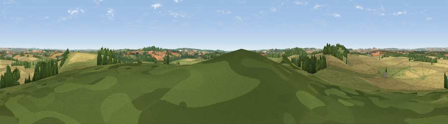

Viewpoint near Longstock
#20011 in England · top 18% of its area beats it · near LongstockThe view, rendered

A 360° render of this exact spot computed from the terrain model, tree cover and land cover — summer colours, afternoon light, calibrated against photographs of famous viewpoints. Real trees, hedges and buildings will differ in detail.
The panorama
Grey silhouette: terrain skyline in each direction (720 bearings, Earth curvature and refraction included). Dashed green: skyline with trees (+15 m) and buildings (+8 m) as obstacles. Blue strip: how far the ground is visible on each bearing.
Where the view opens
Wedge length = distance to the farthest visible ground on that bearing (vegetation-aware). Rings at 10, 25 and 50 km.
What fills the view
54% cropland · 35% grassland · 10% woodland ·
Angular shares of the visible panorama (visual magnitude), not map area. Landscape diversity 0.42 (0–1 Shannon).
Key numbers
More beautiful places nearby
The staircase of upgrades: each row has a higher view potential than everything closer. Driving times are estimates from straight-line distance, calibrated against real road routing — check an actual route before setting out.
| Place | Direction | Drive | Score |
|---|---|---|---|
| Viewpoint near Nether Wallop | W · 2 km | ~5 min | 54.3 |
| Viewpoint near Stockbridge | SE · 4 km | ~10 min | 64.3 |
| Viewpoint near Sparsholt | SE · 11 km | ~20 min | 66.9 |
| Viewpoint near Bulford | WNW · 16 km | ~28 min | 70.3 |
| Beacon Hill | NNE · 23 km | ~38 min | 76.7 |
| Martinsell viewpoint | NNW · 31 km | ~48 min | 77.3 |
| Viewpoint near Buriton | ESE · 41 km | ~61 min | 80.0 |
| Beacon Hill | ESE · 50 km | ~71 min | 85.8 |
51.13688, -1.51292 · source: screening · position refined by local search. Computed location — check access rights before visiting.